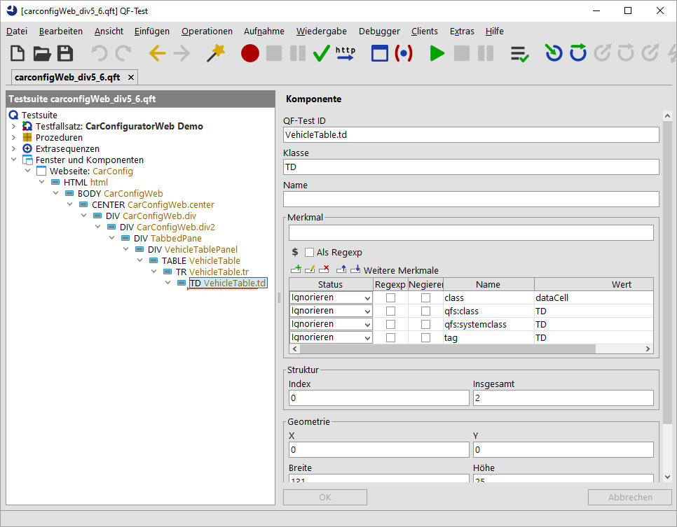
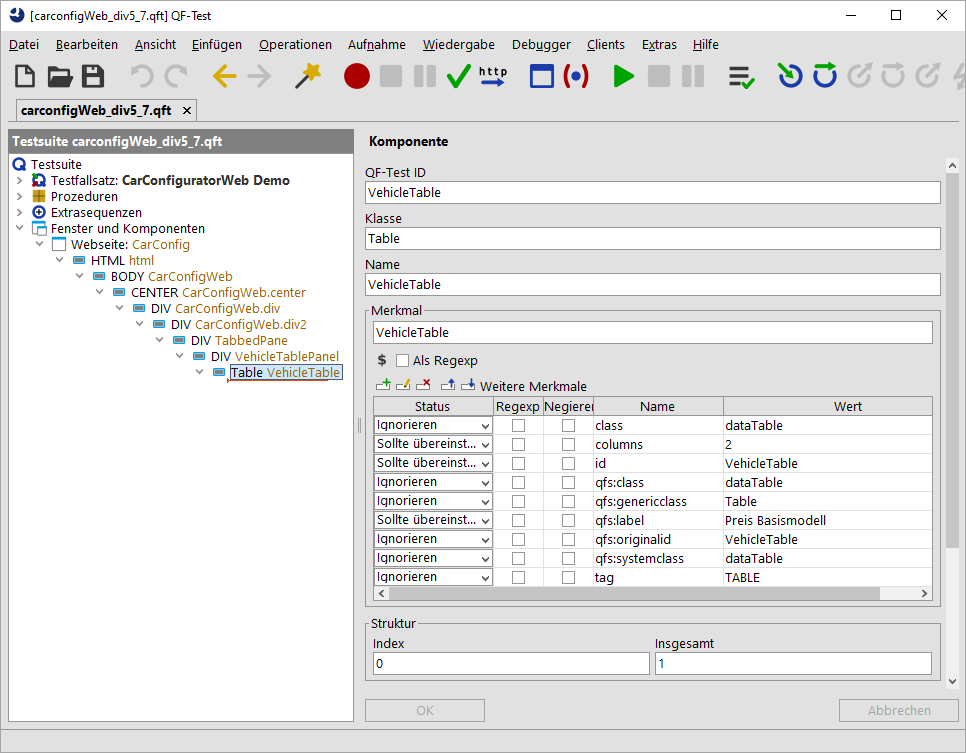

| Version 6.0.3 |
Der Ansatz aus den vorherigen Abschnitten funktioniert sehr gut
für jede Art von Standardkomponente, wie Buttons oder
Checkboxen. Aber neben diesen Komponenten, gibt es noch komplexe
Komponenten in einer GUI. Diese Komponenten beinhalten Datensätze, welche
wir meistens direkt ansprechen sollten, z.B. mit der
Elementsyntax von QF-Test. Solche Komponenten können Tabellen,
Bäume oder Listen sein. Hierfür müssen wir sowohl der Komponente
wie auch den Datensätzen selbst generische Klassen zuweisen.
Welche Einzelkomponenten das im Detail sind, wird in den folgenden Abschnitten
beschrieben: installCustomWebResolver - Combobox, installCustomWebResolver - Liste,
installCustomWebResolver - Tabelle und TreeTable,
installCustomWebResolver - TabPanel und Accordion,
installCustomWebResolver - Baum und TreeTable.
|
|
|
||||||
|
| Abbildung 47.13: Verbesserung durch Zuweisung komplexer Komponenten | ||||||
Unser Beispiel bezieht sich auf die Tabelle, die die Fahrzeuge beinhaltet. Anfangs müssen wir wieder einige Mausklicks bzw. Checks auf die angezeigten Fahrzeuge aufzeichnen. Jetzt erhalten wir eine Aufzeichnung wie diese:
|
|  | ||
|
| Abbildung 47.14: Aufzeichnung einer Tabelle im WebCarConfigurator | ||
Es wurde ein Klick auf eine TD Komponente, die
unter einer TR Komponente, welche unter einer
TABLE Komponente liegt, aufgezeichnet.
Die aufgezeichnete TD Komponente
beinhaltet auch das weitere Merkmal class
mit dem Wert dataCell. Bei der TR
Komponente steht dort dataRow, bei der
TABLE steht dort dataTable.
Wenn wir nun schrittweise diese Komponenten selektieren und dabei beobachten, welche Komponente im SUT hervorgehoben werden, kommen wir zu folgendem Schluss:
Eine TD Komponente
steht hier für eine Tabellenzelle, eine
TR Komponente steht für eine Tabellenzeile und die
TABLE Komponente steht für die gesamte Tabelle.
Außerdem werden für die korrekte Indexierung über Spaltentitel auch die
Überschriftenzeile sowie die einzelne Überschrift benötigt.
Die ersten drei Komponenten sehen wir uns jetzt näher
an, um diesen eine generische Klassen zuweisen zu können.
QF-Test möchte nämlich für Tabellen genau diese fünf Klassen auflösen, siehe
installCustomWebResolver - Tabelle und TreeTable.
Fangen wir mit dem TABLE Knoten an. Hier gibt es wieder
ein class Attribut mit dem Wert
dataTable. Das ist ein klares Zeichen, dass dieser Wert
dataTable eine Tabelle repräsentiert. Nun gehen wir
also wieder zum Prozeduraufruf von
qfs.web.ajax.installCustomWebResolver und passen
den Parameter genericClasses auf
dataTable=Table,textfield=TextField,button=Button an.
Nun kommt die Tabellenzeile an die Reihe. Auf der
TR Komponente finden wir wieder das
class Attribut, diesmal mit dem Wert
dataRow. Das ist wiederum ein klares Zeichen.
Jetzt müssen wir also wieder den Prozeduraufruf von
qfs.web.ajax.installCustomWebResolver anpassen und
setzen den Wert für den Parameter von genericClasses auf
dataRow=TableRow,dataTable=Table,textfield=TextField,
button=Button.
Anschließend nehmen wir uns die TD Komponente vor.
Auch hier finden wir wieder das
class Attribut, diesmal mit dem Wert
dataCell. Also, passen wir wieder den
genericClasses Parameter des Prozeduraufrufes an,
nun auf
dataCell=TableCell,dataRow=TableRow,dataTable=Table,
textfield=TextField,button=Button.
Bitte beachten Sie, dass Ihnen auch erlaubt ist, nach jedem
Komma einen Zeilenumbruch einzufügen.
Nun möchten wir QF-Test noch bekannt geben, wie die Spaltenüberschriften
zu erkennen sind, damit QF-Test bei der Aufnahme
diese als Textindex verwenden kann. Wieder gibt es das
class Attribut, diesmal mit dem Wert
headerRow für die Überschriftenzeile und headerCell
für die einzelne Spaltenüberschrift. Wir ergänzen wieder den
genericClasses Parameter des Prozeduraufrufes. Er lautet nun
headerRow=TableHeader, headerCell=TableHeaderCell, dataCell=TableCell,
dataRow=TableRow, dataTable=Table,
textfield=TextField, button=Button.
Der nächste Schritt ist die zuvor aufgezeichneten Komponenten zu
löschen, den Prozeduraufruf von
qfs.web.ajax.installCustomWebResolver auszuführen,
die Webseite neuzuladen und die Klicks nochmals aufzuzeichnen.
Als Resultat bekommen wir eine für QF-Test typische Aufzeichnung
eines Elements, wie VehicleTable@Modell&0 (oder
jede andere Zeile, je nachdem was Sie angeklickt haben). Die
aufgezeichneten Komponenten beinhalten nun nur noch eine
Table Komponente ohne weitere Unterkomponenten,
denn diese werden ab jetzt als Elemente von QF-Test behandelt.
|
|  | ||
|
| Abbildung 47.15: Aufzeichnung einer aufgelösten Tabelle im WebCarConfigurator | ||
Nachdem wir nun eine komplexe Komponente auflösen konnten, finden Sie eine Beschreibung des weiteren Vorgehens im nächsten Abschnitt.
| Letzte Änderung: 6.9.2022 Copyright © 1999-2022 Quality First Software GmbH |